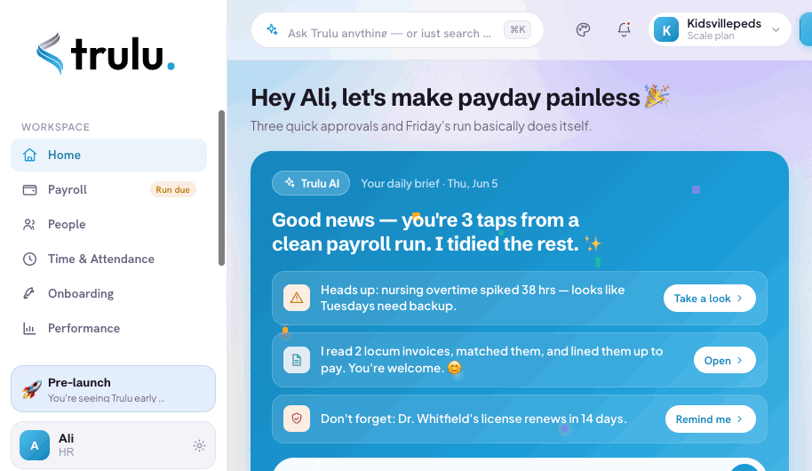

Here's what's waiting inside
A calm, AI-powered home for payroll and people ops. This is the real dashboard early teams are using today.

Trusted by modern teams who'd rather not do payroll by hand
Everything HR, in one calm place
No more juggling six tools. Here's exactly what you get the moment Trulu opens.
Run payroll in three taps
Trulu syncs hours, applies adjustments, and scans every run for anomalies before you approve. Taxes filed, contractors paid, employees happy.
- Automatic tax calculation & filing
- AI flags overtime spikes & mistakes
- Employees & contractors in one run
An AI that actually knows your team
Ask anything in plain English. Trulu reads your docs, parses invoices, drafts reviews, and surfaces what needs you — before you go looking for it.
- Natural-language answers across your data
- Auto-parses contracts, invoices & W-4s
- A daily brief of what matters today
Your whole team, beautifully organized
Every person, role, document, and pay detail in one searchable directory. Filter by department, open a profile, get an instant AI summary.
- Rich profiles with comp & documents
- Filter by team, role, or status
- Custom onboarding templates per role
Time & PTO that approve themselves
Track attendance, see who's out, and approve time off in a tap. Trulu pre-checks each request against policy and coverage so you decide in seconds.
- One-tap approve / deny with AI context
- Live "who's out this week" view
- Overtime alerts before they cost you
Less admin. More humans.
Early teams are already running on Trulu. Here's what they say.
"Payroll used to eat my entire Thursday. With Trulu it's a coffee-length task. The AI catches overtime mistakes I'd have paid out."
"It replaced our spreadsheet, our PTO tracker, and two other tools. Onboarding a new nurse is now a checklist that fills itself in."
"The daily AI brief is the first thing I read. It tells me what needs me before anyone has to email me about it. Genuinely calming."
Built for healthcare-grade trust
Your team's most sensitive data — pay, SSNs, medical credentials — deserves the highest bar. Trulu is engineered for compliance from day one.
- End-to-end encryption in transit & at rest (AES-256)
- Role-based access & full audit logs
- Daily backups with point-in-time recovery
Questions, answered
Everything you might want to know before you join.
Is my team's data secure?
Can I migrate from my current HR or payroll tool?
When does Trulu launch?
How does the AI actually help?
What does it cost?
Do you handle taxes and filings?
Ready to be first in line?
Join the teams ditching busywork for an HR platform that just handles it. Early access, founding-member pricing, zero spam.